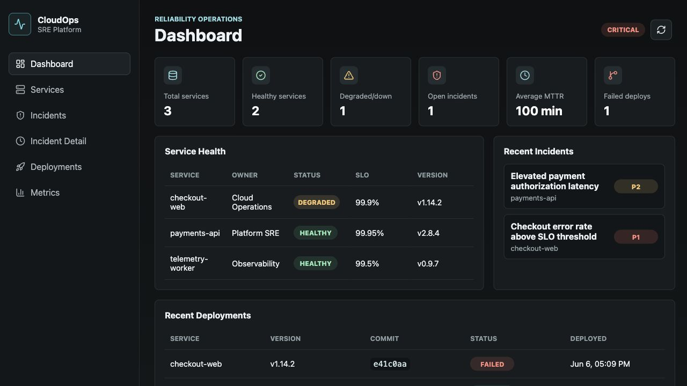

CloudOps SRE Platform
An EKS reliability dashboard for the operational view I always wanted: service health, deployments, incident timelines, MTTR, and SLO views in one place.
- Problem: Reliability signals were scattered across service health, deployments, incident timelines, MTTR, and SLO views.
- Architecture: React, FastAPI, PostgreSQL/RDS, Docker, Helm, EKS, and Terraform-backed AWS infrastructure.
- What I checked: Backend replicas scaled from 2 to 6 under k6 load, sustaining 2,035 requests at 99.5% success with 1.52s p95 latency.
ReactFastAPIPostgreSQL/RDSDockerEKSHelmTerraformCloudWatch